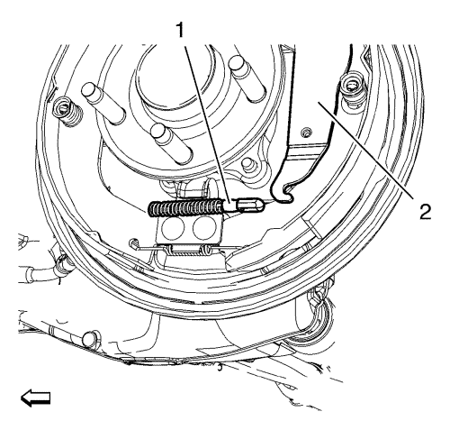

Utilizando un destornillador de punta plana, oprima la lengüeta de retención visible (1) en el adaptador de cable del freno de mano, luego incline el lateral liberado del cable de nuevo hacia la placa portafrenos.
Gire el cable de freno de mano para dejar al descubierto la otra lengüeta de retención.

Libere el cable del freno de mano (1) de la palanca del freno de mano (2) utilizando una herramienta adecuada.
Desmonte el cable del freno de mano (1) a través de la apertura en la placa portafrenos.
Coloque el cable del freno de mano a través de la apertura de la placa portafrenos. Monte solamente el muelle de retroceso del cable justo por detrás de la lengüeta de posicionamiento del muelle en la placa portafrenos.
Empuje el cable del freno de mano (1) hacia la parte trasera del vehículo, a lo largo del exterior de la zapata de freno hasta que el extremo del cable quede justo pasada la ranura de la palanca del freno de mano (2).
Mientras sujeta el cable del freno de mano trasero (1) en posición desde delante hacia atrás, mueva el extremo del cable hacia la parte de atrás de la palanca del freno de mano (2).
Encaje el cable del freno de mano trasero (1) dentro de la ranura de la palanca (2), luego tire del cable hacia la parte de delante del vehículo para fijar el extremo del cable en la ranura.
Mientras continúa tirando del cable fuera de la palanca, coloque un destornillador de punta plana dentro de la apertura en la palanca para prevenir que el cable se salga de la ranura de la palanca.
Mueva el muelle de retroceso de cable a través de la apertura de la placa portafrenos.
Fije los herrajes del cable a la placa portafrenos. Intente tirar del cable del freno de mano para soltarlo de la placa portafrenos, a fin de asegurarse de que las lengüetas de retención (1) del herraje están firmemente colocadas.
Monte los cables del freno de mano trasero (1) al seguro (3).
Monte el pasamuros del cable del freno de mano trasero (2) en la placa portafrenos trasera.